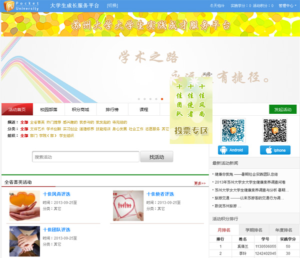
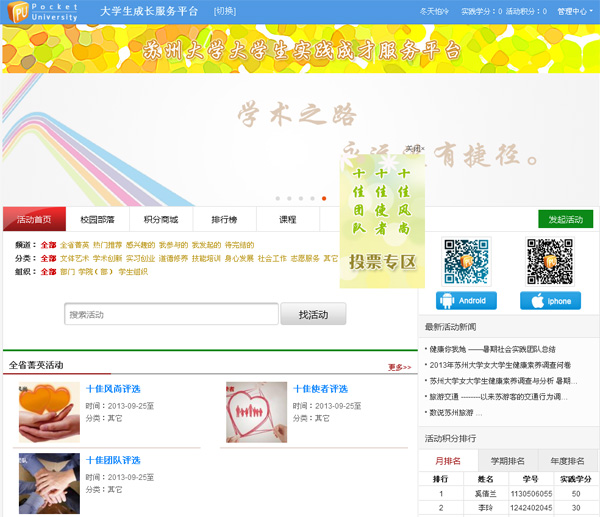

注意事项：
1. 申报只能在网站进行
2. 优秀社会实践基地申报（每校限1个） 优秀调研报告申报（每校限报2篇） 十佳风尚奖申报（每校限报2个） 其余（按照下发名额申报）
3. “*”标记为必填项
1. 申报只能在网站进行
2. 优秀社会实践基地申报（每校限1个） 优秀调研报告申报（每校限报2篇） 十佳风尚奖申报（每校限报2个） 其余（按照下发名额申报）
3. “*”标记为必填项
申报流程
1. 请登录网站：http://www.pocketuni.net，请按区域选择所属学校、输入用户名（学生为学号、老师请向团委申请申请帐号、团委为团省委统一下发帐号）、密码（初始密码六个1）

2. 根据提示验证自己的用户信息，经过四步的验证后进入本校主站


3. 在本校主站页面将会看到“三下乡评选活动”的飘浮窗
4. 点击飘浮窗进入“三下乡评选活动”主页
5. 主页下方看到“选择相应的项目进行申报”，点击需求申报的项目进行申报
6. 完成一个项目的申报后，学生可以直接按屏幕右上方的“×”退出申报，并进行下一个项目的申报
7. 共有七个申报项目，学生可按需要申报的项目进行填写
8. 所有申报项目填写完成后，学生按屏幕右上方的“×”退出即可
9. 申报结束后，该项目进入了学校审核及团省委的审核流程，学生需关注网站上的站内信提醒，无论通过与否系统均会将最终状况发送给你
2. 根据提示验证自己的用户信息，经过四步的验证后进入本校主站

3. 在本校主站页面将会看到“三下乡评选活动”的飘浮窗
4. 点击飘浮窗进入“三下乡评选活动”主页
5. 主页下方看到“选择相应的项目进行申报”，点击需求申报的项目进行申报
6. 完成一个项目的申报后，学生可以直接按屏幕右上方的“×”退出申报，并进行下一个项目的申报
7. 共有七个申报项目，学生可按需要申报的项目进行填写
8. 所有申报项目填写完成后，学生按屏幕右上方的“×”退出即可
9. 申报结束后，该项目进入了学校审核及团省委的审核流程，学生需关注网站上的站内信提醒，无论通过与否系统均会将最终状况发送给你